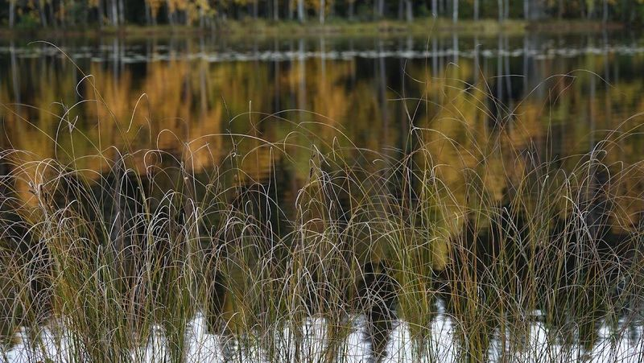
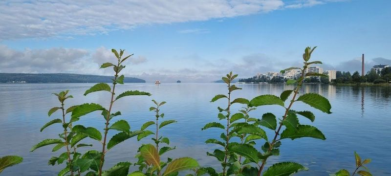
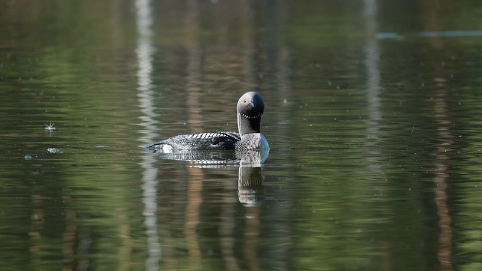

Referenssit
Yli 50 kaavaa, yli 30 kuntaa, yli 3 500 km rantaviivaa
Yli 20 vuoden käytännön kokemus kaavoituksesta. Kaavoitus on ydinosaamisemme — digitaaliset menetelmät ja selkeä vuorovaikutus tukevat sitä.

Yleis- ja asemakaavoitus
Yli 50 kaavaa yli 30 kuntaan vuosina 2004–2025. Rantaviivaa kaavoitettu yli 3 500 km, erillisiä järviä kaavoissa yli 500 kpl. Muiden laatimia kaavoja muutettu noin 2 000 km:n edestä.
- 15 rantayleiskaavaa (MRL 72 §): mm. Kyrsyä, Suursaimaa, Ruotsalainen, Pyhäjärvi ja Orivesi
- 20 ranta-asemakaavaa, pääosin Päijänteen ja Saimaan alueella
- 10 yleiskaavaa, mm. Hollolan ja Pieksämäen strategiset yleiskaavat
- 6 kylä- ja taajamayleiskaavaa sekä 4 hanketta asiantuntijaroolissa

Maankäytön digitalisaatio
17 maankäytön digitalisaation kehittämis- ja määrittelytehtävää vuosina 2015–2024, projektipäällikkönä tai vahvassa asiantuntijaroolissa. Painopiste maankäyttöpäätösten tietomalleissa ja tiedon yhteentoimivuudessa.
- Ympäristöministeriö: kaavamääräyskokoelma sekä maankäyttörajoitusten ja rakennusperinnön tietomallit
- Tulevaisuuden maankäyttöpäätökset 2030 — tiekartta päätöstietojen digitalisoinnille
- Kaavojen digitoinnin selvitys: kannattaako Suomen kaavat digitalisoida ja miten
- SYKE: OSKati-hanke ja VOOKA-pilotit Etelä- ja Pohjois-Savon kuntiin

Osallistuminen ja vuorovaikutus
Selkeät kaava-asiakirjat, yleisötilaisuudet ja kuhunkin hankkeeseen sopiva osallistumisen tapa. Karttapalautepalveluista suurissa kaavahankkeissa on kertynyt kokemus toimivista käytännöistä ja teknisistä ratkaisuista.
- Karttapalautejärjestelmä 14 kaavahankkeessa: mm. Ruotsalainen, Pyhäjärvi ja Hollolan strateginen yleiskaava
- Ympäristöministeriön tietomallitöiden vuorovaikutus kuudessa hankkeessa — kyselyt ja työpajat Miro- ja Mural-alustoilla
- Saavutettava vuorovaikutusalusta, joka pohjautuu Tampereen kaupungin avoimen lähdekoodin kehitystyöhön
Viimeisimmät yleiskaavahankkeet
Pyhäjärven rantaosayleiskaava
Pieksämäki
Pyhäjärven ranta-alueiden maankäytön suunnittelu. Valtuusto hyväksyi 12.5.2025.
Lainvoimainen Avaa projekti-sivusto → OsayleiskaavamuutosTahiniemi–Länsiväylä osayleiskaavamuutos
Pieksämäki
Tahiniemi-Länsiväylä-alueen yleiskaavan muutos. Kaava on lainvoimainen.
Lainvoimainen Avaa projekti-sivusto → RantaosayleiskaavaRuotsalaisen rantaosayleiskaava
Asikkala
Ruotsalaisen alueen rantakaava. Valtuusto hyväksyi 17.11.2025.
Lainvoimainen Avaa projekti-sivusto → RantayleiskaavamuutosHeinäveden itäisten alueiden rantayleiskaavamuutos
Heinävesi
Itäisten ranta-alueiden kaavamuutos. Valtuusto hyväksyi 12.5.2025.
Lainvoimainen Avaa projekti-sivusto → RantaosayleiskaavaKyrsyän rantaosayleiskaava
Sulkava
Noin 130 km²:n rantasuunnittelualue luoteisessa Sulkavassa. Valtuusto hyväksyi 5.5.2025.
Lainvoimainen Avaa projekti-sivusto → OsayleiskaavaSuur-Saimaan osayleiskaava
Taipalsaari
Noin 270 km²:n suunnittelualue Suur-Saimaalla. Kaavaehdotus nähtävillä loppuun 31.1.2026.
Valmistelussa Avaa projekti-sivusto → RantayleiskaavamuutosHeinäveden läntisten alueiden rantayleiskaavamuutos
Heinävesi
Läntisten ranta-alueiden kaavamuutos rakennusoikeuksien ajantasaistamiseksi. Hyväksyminen 2026 loppupuolella.
Valmistelussa Avaa projekti-sivusto →